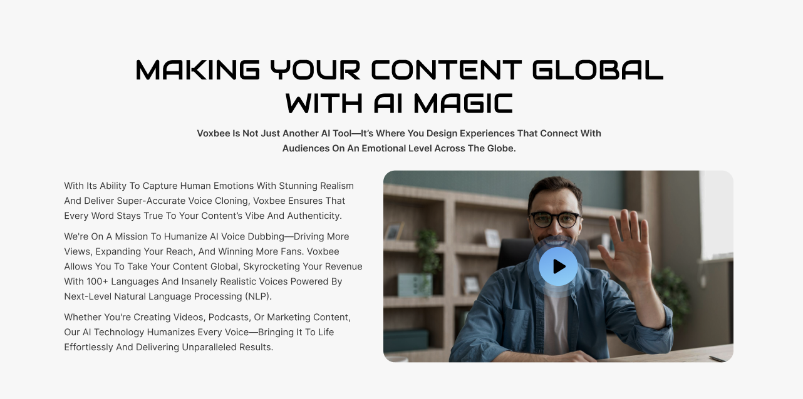
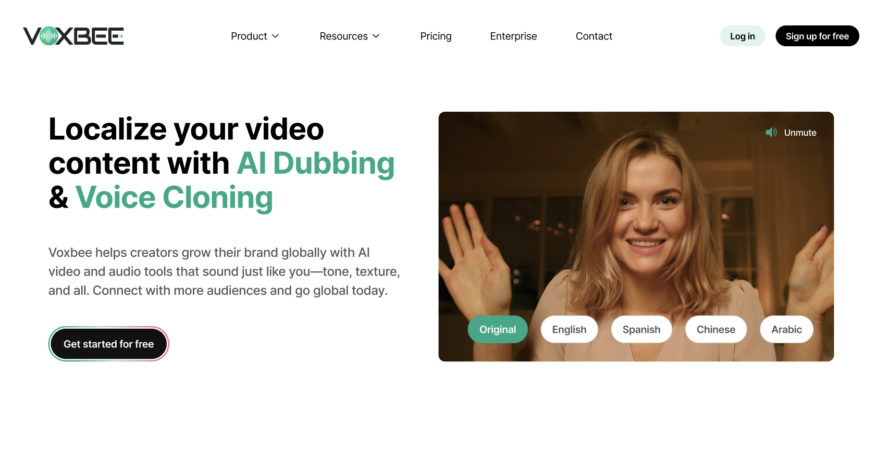

01
Clean & professional visual identity

Users expressed feeling overwhelmed and confused by the dense blocks of text and unfocused structure of the original site, which resulted in quick drop-off and low perceived trust.

To combat this, the redesign features digestible chunks of information, a refined visual identity, and an organized information architecture.